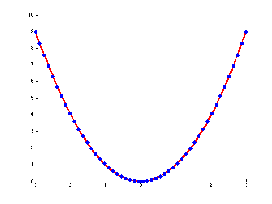
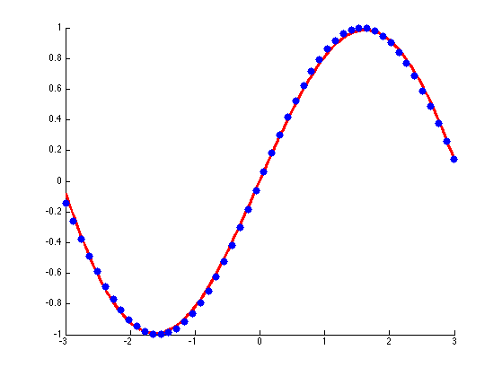
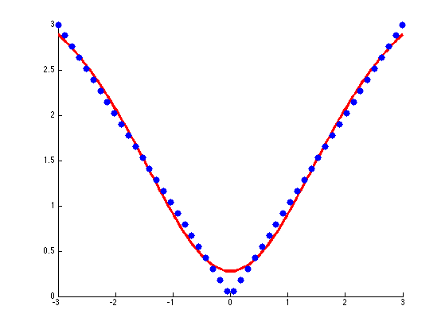
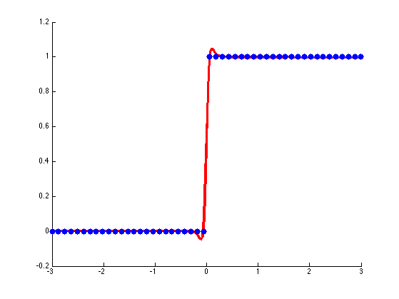

Reproduced fig 5.3 from Bishop's book
fns = { @(x) x.^2, @(x) sin(x), @(x) abs(x), @(x) (x>0) };
for fi=1:length(fns)
fn = fns{fi};
setSeed(0);
N = 50;
X = linspace(-3, 3, N)';
y = fn(X);
options.Display = 'none';
options.MaxIter = 100;
lambda = 1e-5;
nhidden = 3;
[model, output] = mlpRegressFitSchmidt(X, y, nhidden, lambda, options);
fprintf('took %d iterations to converge, %s\n', output.iterations, output.message);
figure; hold on
Xtest = linspace(-3, 3, 200)';
[yhat, v] = mlpRegressPredictSchmidt(model, Xtest);
h=plot(Xtest,yhat,'r-');
set(h,'LineWidth',3);
plot(X,y,'b.','markersize',25);
printPmtkFigure(sprintf('mlpRegressBishopFn%d', fi));
end
took 100 iterations to converge, Reached Maximum Number of Iterations
took 100 iterations to converge, Reached Maximum Number of Iterations
took 100 iterations to converge, Reached Maximum Number of Iterations
took 100 iterations to converge, Reached Maximum Number of Iterations
   